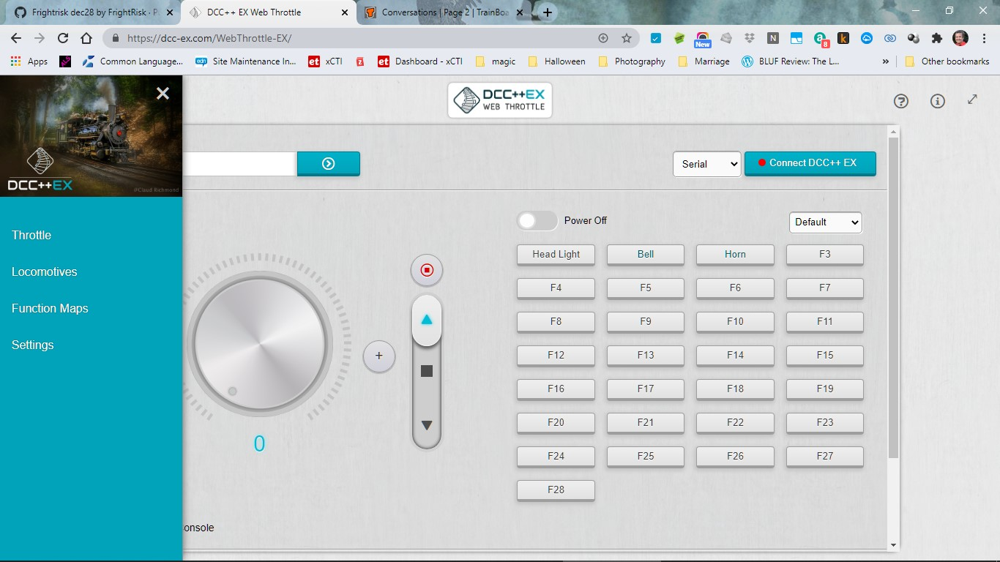

Choosing a Throttle (Controller)

This page is specifically intended for a Conductor who has installed just the recommended hardware (including WiFi). If you are a Tinkerer or Engineer or have installed some of the additional, or different, hardware from that recommended for a Conductor then we suggest that you look at the Choosing a Throttle (Controller) - Advanced page for the full list of Throttle (Controller) options.
What You Need & Why You Need It
You need just two things that work together to operate your model railroad:
The EX‑CommandStation (aka the Command Station or ‘CS’)
A Controller (aka Front-end, Cab, or Throttle)
The EX-CommandStation
The EX‑CommandStation is covered in the Getting Started section, and is usually an Arduino microcontroller, a motor driver and a WiFi shield. The Command Station accepts instructions from a controller and generates packets that are transmitted to your track and subsequently your trains.
The Throttle (Controller)
Since the EX‑CommandStation simply accepts commands to turn into signals for your layout, you need something that sends those commands to run your trains - a controller. It isn’t very practical to type something like <t 1 3 75 1> into a serial monitor to tell your train to move each time! 😉 A controller can be a hardware device like a handheld throttle (also called a Controller or Cab), an App that runs on your phone, a Web Page, or front-end software like JMRI or Rocrail that runs on a computer or Raspberry Pi.
Throttle (Controller) Options
Here is a small subset of the throttles you can use with the EX‑CommandStation. These options are simple and inexpensive (i.e. free) and are suitable for initial testing if you have installed just the recommended hardware (including WiFi). Namely WiFi (using a smart phone) and Direct Connection.
For further throttle and connection options, refer to Choosing a Throttle (Controller) - Advanced.
Connecting via WiFi
For those who just want to run trains and not use any other control software, the simplest method to get going is to download a compatible phone or tablet app and connect directly from your wireless device to the EX‑CommandStation. You need a Command Station with a WiFi Shield.
Here is an image that represents a direct connection.

There are number of excellent phone apps and physical hardware devices that can be used a wifi Throttle (Controller) for the EX‑CommandStation. On this page we are only going to cover two.
Compatible Wifi Throttles
Warning
A limitation of the Access Point Mode that is recommended in the Getting Started pages is that the wiThrottle Server of the EX‑CommandStation cannot be ‘discovered’. Engine Driver can guess it, but wiThrottle can’t. In wiThrottle you will need type in the address.
For more information on any of these throttles, you can click on their links below or see our Throttles Page Index.
We will just cover two here. These two are a) free, or have a free version, b) are reasonably easy to get to work, and c) most people will already have a suitable phone to use:
If you have an Android phone use Engine Driver.
If you have a Apple (iOS) phone use
WiThrottle Lite.
Engine Driver (Android | WiThrottle | WiFi)
Engine Driver is a throttle app for your phone that can control multiple locos and your turnouts. It uses an interface called “wiThrottle Protocol” (for WiFi Throttle). Any wiThrottle Protocol compatible throttle will work with the EX‑CommandStation. There are two ways to connect it;
The first method is by connecting directly to the Command Station via WiFi. You will need a WiFi board connected to the Command Station (see Wifi Setup WiFi Setup).
The second method is to use JMRI and connect Engine Driver (ED) to the computer running JMRI. (We won’t cover that option here.)
Basic use of Engine Driver will be covered on the following Test Your Setup page. (See Engine Driver Page for additional details on how to install and run Engine Driver.)
WiThrottle Lite (iOS | WiThrottle | WiFi)
wiThrottle is an app for iPhones and iPads. It can connect directly to the EX‑CommandStation like Engine Driver does, or connect to JMRI on a computer and then have JMRI connect to the Command Station via a USB cable.
The “Lite” version of wiThrottle is free and is more than adequate for some initial testing and base running of locos.
Basic use of wiThrottle will be covered on the following Test Your Setup page. (See WiThrottle Page for details on how to install and run wiThrottle.)
Connecting via USB
Here are your connections, just a computer running a chromium-based browser (Chrome, Edge, Safari and others) a USB cable, and your EX‑CommandStation.

Compatible USB Throttles
There is currently only one USB compatible Throttle (Controller) for the EX‑CommandStation.
Our EX-WebThrottle (DCC++ | USB/Serial)
The simplest option is to just use a throttle connected directly to the Command Station. The simplest of all is arguably EX‑WebThrottle, connected via a USB cable from your computer and web browser directly to the Command Station. You have control of multiple locomotives and can operate turnouts. There is a way to replace the USB cable with a wireless connection, but we will cover that later in the Wireless USB Bridge section. Below is a picture of EX‑WebThrottle with the side menu open. You can click on the image to see it full size.
{kind=link}
Basic use of EX‑WebThrottle will be covered on the following Test Your Setup page. (For additional operating instructions see how to use EX-WebThrottle)
Next Steps - Testing your setup
Click here or click the “next” button to learn how to test your EX‑CommandStation.